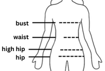

Body Type Calculator
Result
Body Shape:
Waist-Hip Ratio:

Bust-size - The circumference measured around the fullest part of your chest.
Waist-size - The circumference measured around the narrowest part of a person's waist, just above the belly button.
High hip size - The circumference measured around the protruding points of your hip bones, approximately 3 inches (7.6cm) below your natural waist.
Hip size - The circumference measured around the hips at the level of the largest part of the buttocks.
Sources
- Lee, J.Y., Istook,C.L., Nam, Y. J., and Park, S. M.,, "Comparison of body shape between USA and Korean women", International Journal of Clothing Science and Technology, Vol.19, No.5, 2007, pp.374-391.
- Yusuf S, Hawken S, Ounpuu S, Bautista L, Franzosi MG, Commerford P, Lang CC, Rumboldt Z, Onen CL, Lisheng L, Tanomsup S, Wangai P, Razak F, Sharma AM, Anand SS (November 2005). "Obesity and the risk of myocardial infarction in 27,000 participants from 52 countries: a case-control study". Lancet. 366 (9497): 1640-9.